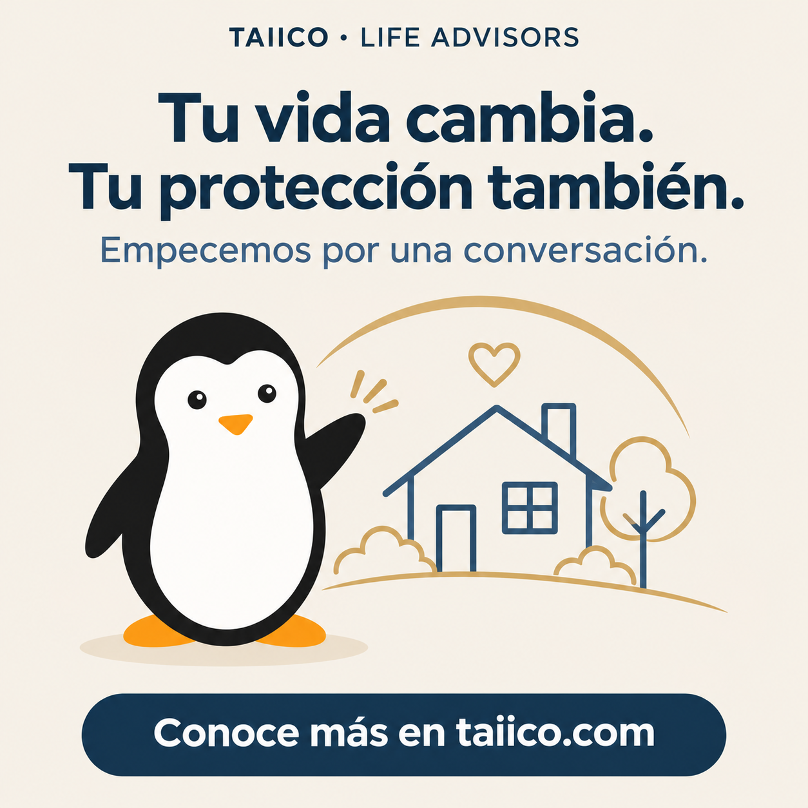
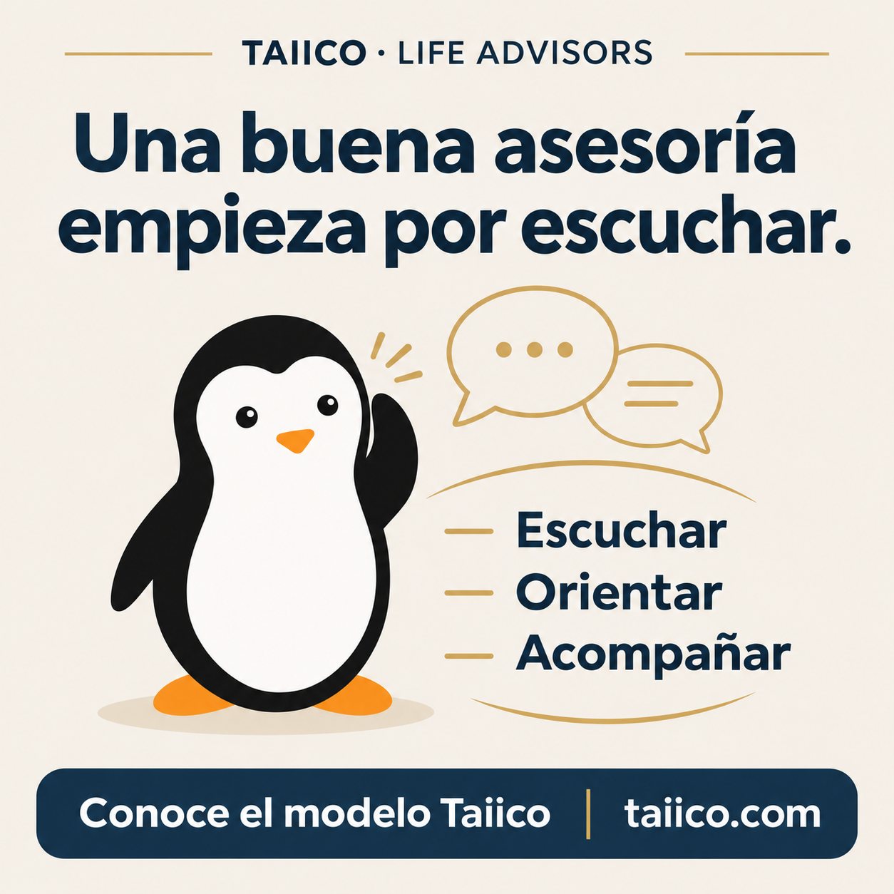
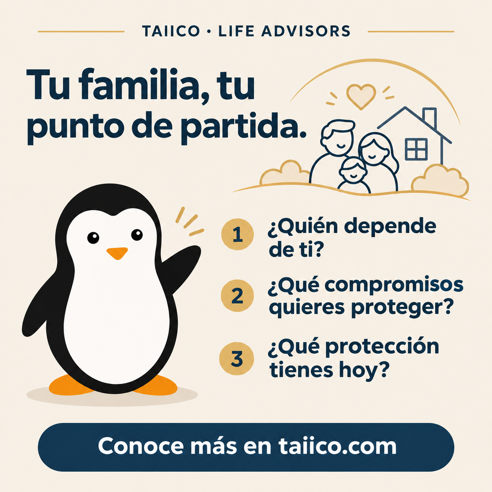
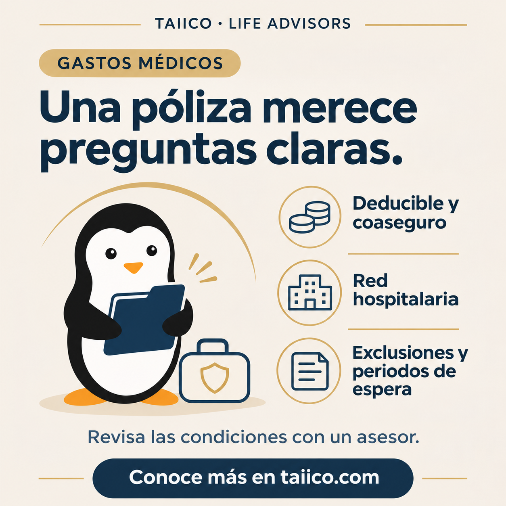
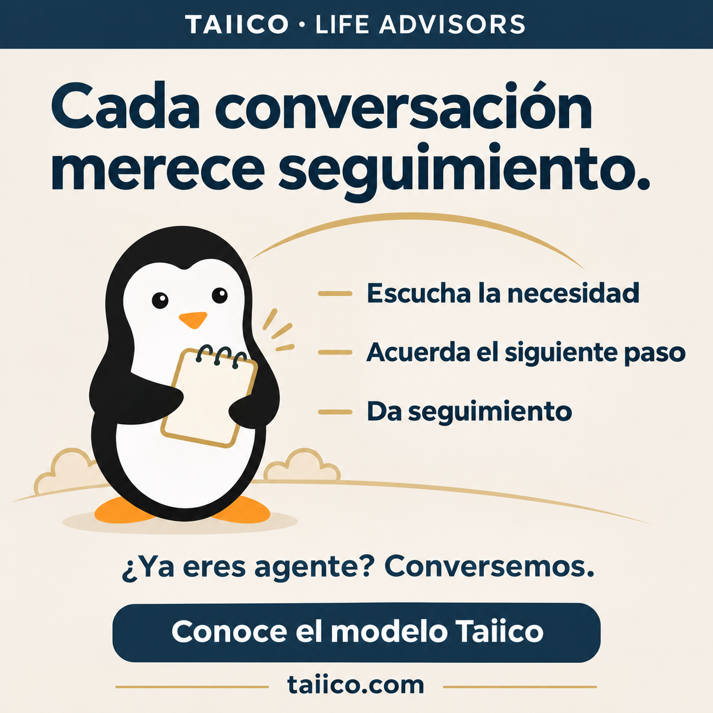
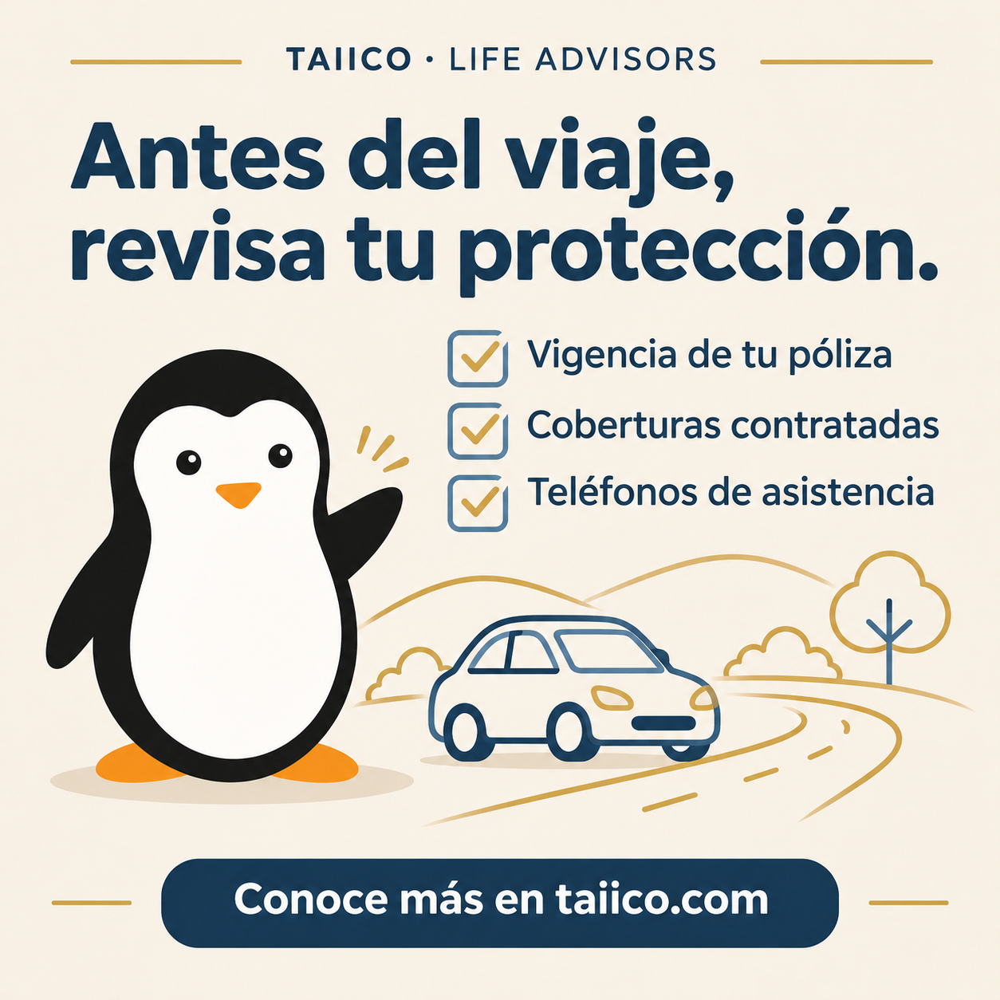
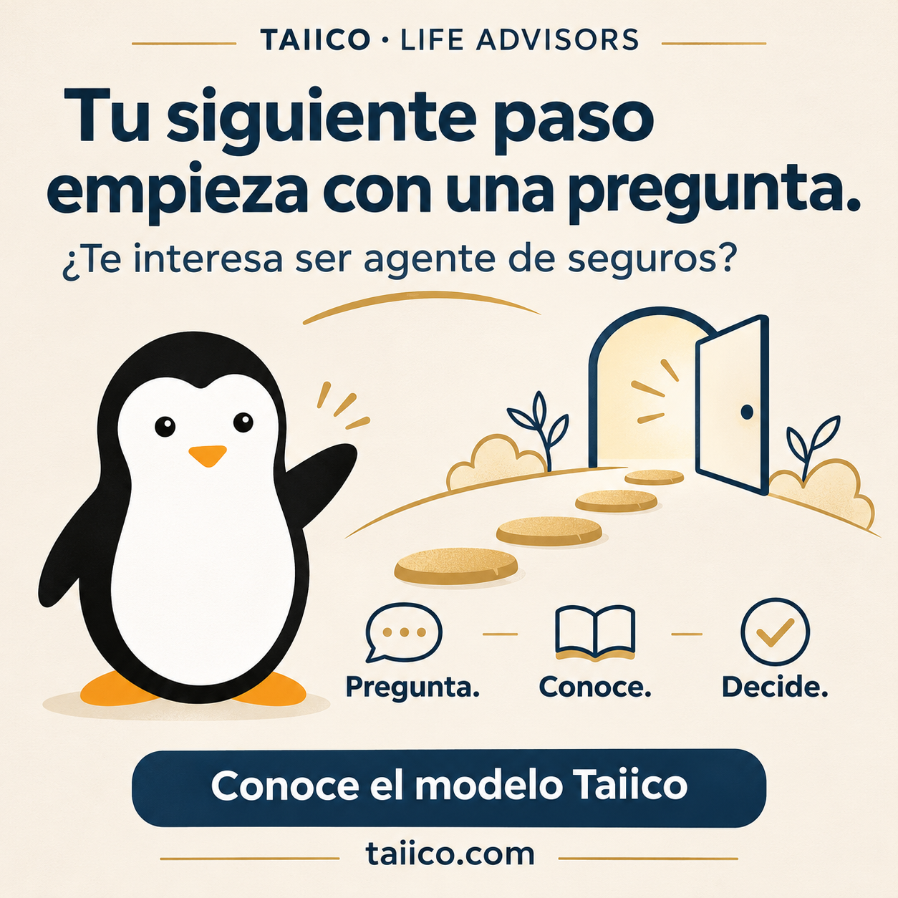
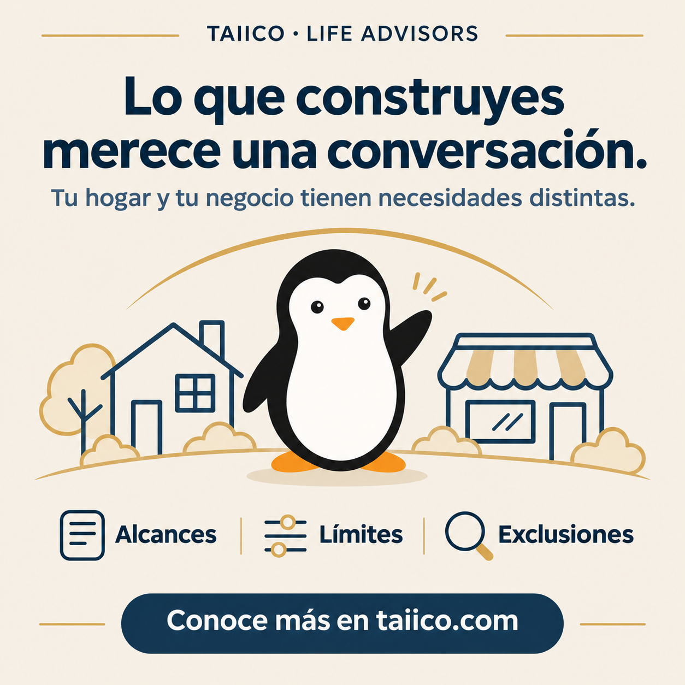
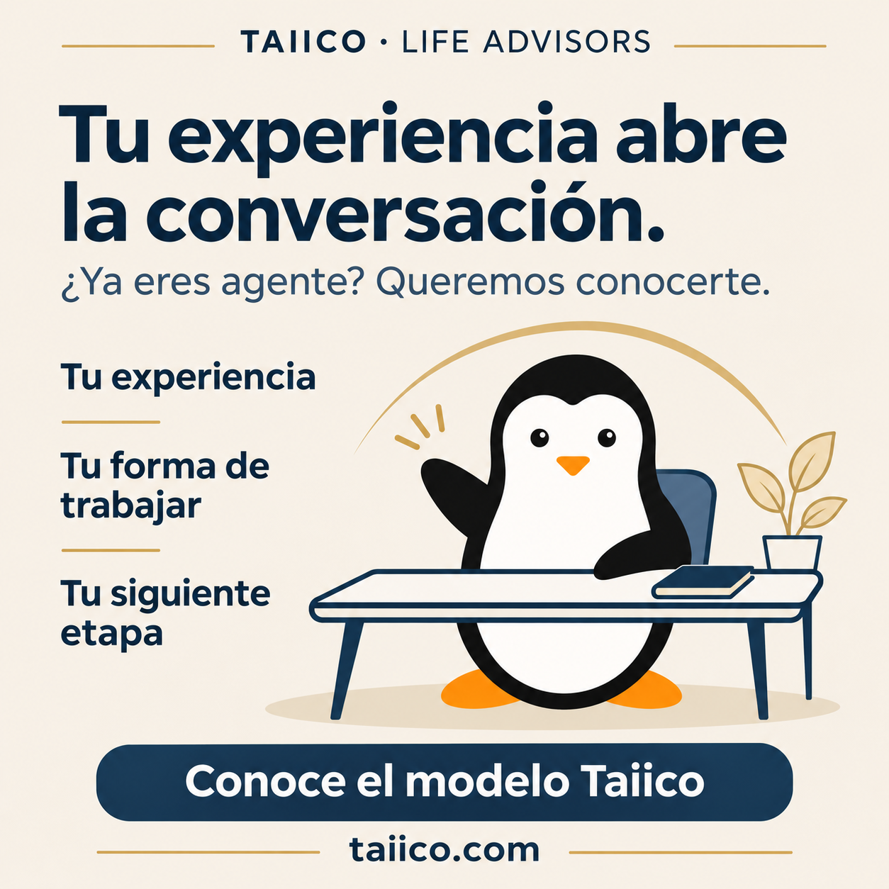
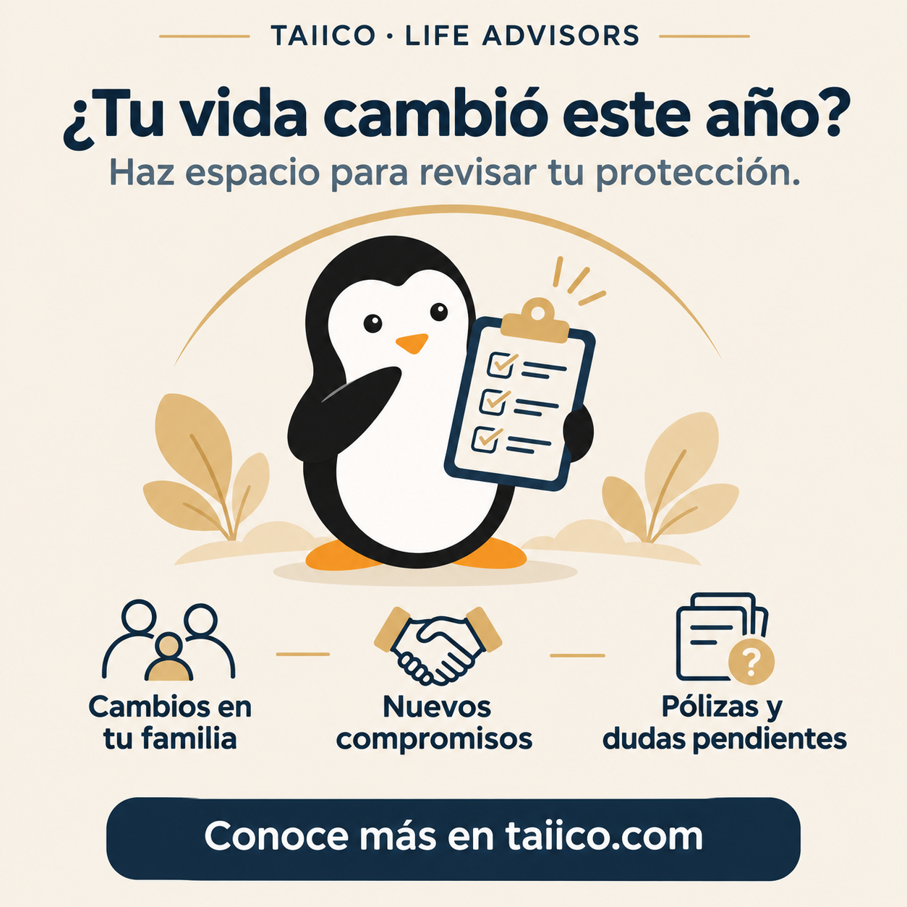

Objetivo y alcance
6 contenidos de captación de clientes y 4 de incorporación de agentes. Cada pieza se adapta a ambas redes. Solo Taiico. TikTok queda fuera de este calendario. Estado: preparado, no programado ni publicado; artes finales incluidos. Sin contratación de planes ni pauta pagada.
Horarios iniciales propuestos: 12:00 Ciudad de México / 19:00 Madrid; no se presentan como horarios óptimos medidos. Verificar el cupo restante antes de programar: cada destino consume una publicación. Este plan completo requiere 20.
Dos caminos hacia el CRM
Publicación → página de asesoría o incorporación → consentimiento → registro confirmado → bandeja Taiico. Las solicitudes de clientes crean una oportunidad comercial pendiente de asignación. Las candidaturas llegan por separado a la bandeja de incorporación.
Instagram: preparar el enlace de la bio
Antes de publicar, establecer este enlace en la bio (aún no modificado): https://taiico.com/?utm_source=instagram&utm_medium=organic_social&utm_campaign=taiico_nov2026&utm_content=bio. La portada permite elegir asesoría o incorporación. Los enlaces en pies de foto no son clicables. Esta configuración atribuye los registros a Instagram/bio, no a cada publicación individual.
Operación diaria
- La mesa Taiico revisa las solicitudes nuevas y las pendientes de asignación cada día hábil.
- Asigna clientes a un agente Taiico activo, considerando producto, ubicación y capacidad. La asignación es manual; no se prometen volúmenes de leads.
- El agente revisa únicamente sus leads, registra contacto, estado y próxima gestión. WhatsApp solo cuando conste esa autorización.
- Objetivo operativo: primer intento de contacto en un día hábil. El indicador de 24 horas del CRM es orientativo e incluye fines de semana.
- Reclutamiento atiende su bandeja separada. Actualiza las etapas comerciales en Gestión Comercial y las de contacto en la bandeja; son seguimientos distintos.
Revisión semanal
Registrar publicaciones emitidas, visitas y clics disponibles en Metricool, solicitudes por canal, porcentaje contactado, solicitudes calificadas, oportunidades asignadas y cierres comerciales. Comparar volumen con calidad; no estimar ingresos sin resultados reales. Revisar cada lunes con Taiico y ajustar las siguientes piezas.
Bandeja de clientes · Bandeja de agentes · Reglas del plan Metricool
2026-11-10 · 12:00 CDMX / 19:00 Madrid · CLIENTES · Imagen
Una conversación que protege

Dirección visual: Plauto · crema, azul Taiico y dorado. Imagen estática completa, lista para ambas redes.
Facebook
Tu vida cambia. Tu protección también.
Un nuevo hogar, una familia que crece o un negocio que empieza son buenos momentos para revisar qué quieres proteger. En Taiico empezamos por escucharte y ayudarte a entender tus opciones.
Cuéntanos qué necesitas y solicita una conversación con un asesor.
https://taiico.com/seguros/asesoria-general/?utm_source=facebook&utm_medium=organic_social&utm_campaign=taiico_nov2026&utm_content=proteccion
Instagram
¿Qué es lo que más te importa proteger hoy?
Tu familia, tu salud o tu patrimonio: empecemos por una conversación.
Entra al enlace de nuestra bio y elige «Quiero asesoría».
#Taiico #Proteccion #Seguros
Arte y texto preparados; pendiente programación
2026-11-12 · 12:00 CDMX / 19:00 Madrid · AGENTES · Imagen
Conoce Taiico

Dirección visual: Plauto · crema, azul Taiico y dorado. Imagen estática completa, lista para ambas redes.
Facebook
¿Te interesa desarrollarte como agente de seguros?
Escuchar, aprender y acompañar decisiones son parte de esta profesión. Si quieres explorar este camino, cuéntanos en qué etapa estás. El equipo de Taiico te explicará el modelo y los pasos para conocerlo.
Solicita información aquí.
https://taiico.com/se-parte-de-nuestro-equipo/?utm_source=facebook&utm_medium=organic_social&utm_campaign=taiico_nov2026&utm_content=inicia-agente
Instagram
Una buena asesoría empieza por saber escuchar.
¿Te interesa ser agente de seguros? Conoce el modelo Taiico y conversa con nuestro equipo.
Enlace en bio → «Quiero ser agente Taiico».
#Taiico #AgentesDeSeguros #DesarrolloProfesional
Arte y texto preparados; pendiente programación
2026-11-14 · 12:00 CDMX / 19:00 Madrid · CLIENTES · Imagen
Protección para tu familia

Dirección visual: Plauto · crema, azul Taiico y dorado. Imagen estática completa, lista para ambas redes.
Facebook
Antes de elegir un seguro de vida, vale la pena conversar sobre tres cosas: quiénes dependen de ti, qué compromisos quieres proteger y con qué protección cuentas hoy.
No todas las familias necesitan lo mismo. Un asesor de Taiico puede ayudarte a ordenar tus preguntas y revisar alternativas.
Solicita asesoría. Las condiciones y aceptación dependen del producto y la aseguradora.
https://taiico.com/seguros/asesoria-general/?utm_source=facebook&utm_medium=organic_social&utm_campaign=taiico_nov2026&utm_content=vida-familia
Instagram
Tres preguntas para empezar a hablar de protección:
1. ¿Quién depende de mí?
2. ¿Qué compromisos quiero proteger?
3. ¿Qué protección tengo hoy?
Conversemos. Enlace en bio → «Quiero asesoría».
Condiciones y aceptación según producto y aseguradora.
#Taiico #SeguroDeVida #Familia
Arte y texto preparados; pendiente programación
2026-11-16 · 12:00 CDMX / 19:00 Madrid · CLIENTES · Imagen
Entiende tu seguro médico

Dirección visual: Plauto · crema, azul Taiico y dorado. Imagen estática completa, lista para ambas redes.
Facebook
Cuando revises un seguro de gastos médicos, lleva estas preguntas a tu asesor: ¿cómo funcionan el deducible y el coaseguro?, ¿qué hospitales incluye?, ¿qué exclusiones y periodos de espera aplican?
Entender las condiciones es parte de decidir. Solicita una conversación con Taiico para revisar tus opciones. Coberturas y aceptación sujetas al producto y la aseguradora.
https://taiico.com/seguros/asesoria-general/?utm_source=facebook&utm_medium=organic_social&utm_campaign=taiico_nov2026&utm_content=gastos-medicos
Instagram
Una póliza merece preguntas claras.
Deducible · coaseguro · hospitales · exclusiones · periodos de espera.
¿Quieres revisar tus dudas con un asesor? Enlace en bio → «Quiero asesoría».
Las condiciones varían según el producto y la aseguradora.
#Taiico #GastosMedicos #Seguros
Arte y texto preparados; pendiente programación
2026-11-18 · 12:00 CDMX / 19:00 Madrid · AGENTES · Imagen
Da seguimiento con intención

Dirección visual: Plauto · crema, azul Taiico y dorado. Imagen estática completa, lista para ambas redes.
Facebook
Una oportunidad necesita algo más que un primer contacto: entender la necesidad, acordar el siguiente paso y dar seguimiento.
En Taiico estamos construyendo un proceso de captación y seguimiento para conectar solicitudes con nuestros agentes. Si ya eres agente y quieres conocer cómo trabajamos, conversemos.
Solicita información. La asignación de oportunidades depende de su disponibilidad y de los criterios de Taiico.
https://taiico.com/se-parte-de-nuestro-equipo/?utm_source=facebook&utm_medium=organic_social&utm_campaign=taiico_nov2026&utm_content=agente-seguimiento
Instagram
Escuchar. Acordar un siguiente paso. Dar seguimiento.
¿Ya eres agente y quieres conocer Taiico? Cuéntanos en qué etapa estás.
Enlace en bio → «Quiero ser agente Taiico».
La asignación de oportunidades depende de disponibilidad y criterios de Taiico.
#Taiico #AgentesDeSeguros #Seguimiento
Arte y texto preparados; pendiente programación
2026-11-20 · 12:00 CDMX / 19:00 Madrid · CLIENTES · Imagen
Antes de salir a carretera

Dirección visual: Plauto · crema, azul Taiico y dorado. Imagen estática completa, lista para ambas redes.
Facebook
¿Planeas salir a carretera? Antes del viaje, revisa la vigencia de tu póliza, las coberturas contratadas y los teléfonos de asistencia de tu aseguradora.
Si quieres explorar opciones de seguro para tu auto, un asesor de Taiico puede orientarte.
Solicita asesoría. Las coberturas y servicios dependen de tu póliza.
https://taiico.com/seguros/asesoria-general/?utm_source=facebook&utm_medium=organic_social&utm_campaign=taiico_nov2026&utm_content=auto-revision
Instagram
Antes del viaje, revisa también tu protección.
✓ Vigencia de la póliza
✓ Coberturas contratadas
✓ Teléfonos de asistencia
¿Buscas opciones para tu auto? Enlace en bio → «Quiero asesoría».
Coberturas y servicios según póliza.
#Taiico #SeguroDeAuto #ViajaInformado
Arte y texto preparados; pendiente programación
2026-11-23 · 12:00 CDMX / 19:00 Madrid · AGENTES · Imagen
Tu siguiente paso profesional

Dirección visual: Plauto · crema, azul Taiico y dorado. Imagen estática completa, lista para ambas redes.
Facebook
Explorar una nueva actividad profesional empieza por hacer preguntas: ¿qué preparación necesito?, ¿cómo es el trabajo diario?, ¿cuáles son los pasos para empezar?
Si te interesa la actividad de agente de seguros, deja tus datos y conversa con el equipo de Taiico. Conoce el modelo antes de decidir.
https://taiico.com/se-parte-de-nuestro-equipo/?utm_source=facebook&utm_medium=organic_social&utm_campaign=taiico_nov2026&utm_content=carrera-agente
Instagram
¿Te llama la atención ser agente de seguros?
Pregunta. Conoce el modelo. Decide con información.
Cuéntanos en qué etapa estás desde el enlace de nuestra bio → «Quiero ser agente Taiico».
#Taiico #CarreraProfesional #AgentesDeSeguros
Arte y texto preparados; pendiente programación
2026-11-25 · 12:00 CDMX / 19:00 Madrid · CLIENTES · Imagen
Protege lo que has construido

Dirección visual: Plauto · crema, azul Taiico y dorado. Imagen estática completa, lista para ambas redes.
Facebook
Tu hogar y tu negocio tienen necesidades distintas. El primer paso es identificar qué quieres proteger y qué situaciones te preocupan.
En Taiico podemos ayudarte a revisar alternativas y entender sus alcances, límites y exclusiones.
Solicita asesoría para tu hogar o empresa. La cobertura depende del producto contratado.
https://taiico.com/seguros/asesoria-general/?utm_source=facebook&utm_medium=organic_social&utm_campaign=taiico_nov2026&utm_content=patrimonio
Instagram
Un hogar. Un proyecto. Un negocio.
Lo que construyes merece una conversación sobre protección.
Cuéntanos qué necesitas: enlace en bio → «Quiero asesoría».
Coberturas, límites y exclusiones según producto.
#Taiico #Patrimonio #Seguros
Arte y texto preparados; pendiente programación
2026-11-27 · 12:00 CDMX / 19:00 Madrid · AGENTES · Imagen
Ya eres agente: conversemos

Dirección visual: Plauto · crema, azul Taiico y dorado. Imagen estática completa, lista para ambas redes.
Facebook
¿Ya eres agente y estás explorando una nueva etapa? Nos gustaría conocer tu experiencia, tu forma de trabajar y lo que buscas en una promotoría.
Déjanos tus datos y selecciona «Ya soy agente». El equipo de Taiico se pondrá en contacto para conversar sobre el modelo y los siguientes pasos.
https://taiico.com/se-parte-de-nuestro-equipo/?utm_source=facebook&utm_medium=organic_social&utm_campaign=taiico_nov2026&utm_content=agente-experiencia
Instagram
Tu experiencia abre la conversación.
Si ya eres agente y quieres conocer la promotoría Taiico, hablemos.
Enlace en bio → «Quiero ser agente Taiico» → «Ya soy agente».
#Taiico #Promotoria #AgentesDeSeguros
Arte y texto preparados; pendiente programación
2026-11-30 · 12:00 CDMX / 19:00 Madrid · CLIENTES · Imagen
Cierra el mes con claridad

Dirección visual: Plauto · crema, azul Taiico y dorado. Imagen estática completa, lista para ambas redes.
Facebook
Antes de cerrar el mes, haz una pausa: ¿cambió algo importante en tu familia, tu trabajo o tu patrimonio?
Puede ser un buen momento para revisar si tu protección sigue alineada con tus necesidades. Un asesor de Taiico puede ayudarte a ordenar tus dudas y revisar opciones.
Solicita una conversación. Condiciones y aceptación según producto y aseguradora.
https://taiico.com/seguros/asesoria-general/?utm_source=facebook&utm_medium=organic_social&utm_campaign=taiico_nov2026&utm_content=revision-proteccion
Instagram
¿Tu vida cambió este año?
Haz espacio para revisar también tu protección.
Familia · salud · patrimonio · preguntas pendientes.
Conversemos: enlace en bio → «Quiero asesoría».
Condiciones según producto y aseguradora.
#Taiico #Proteccion #Asesoria
Arte y texto preparados; pendiente programación